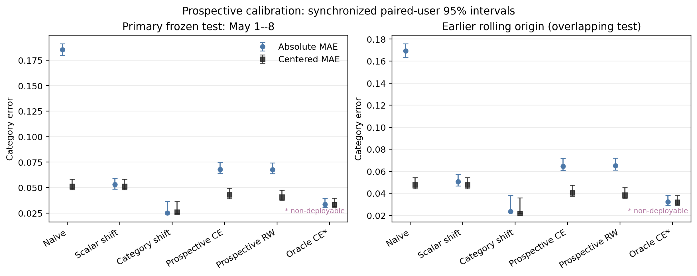

Contents · 10 sections
1What problem is it solving?2The error is mostly in the level, not the order3How much does removing each user's own level fix?4Where does the remaining gap come from?5Does a correction still work if it is learned first and applied later?6After correction, are better categories chosen?7A simulation with known answers: where corrections fail8Limitations as I see them9How a recommendation team could use this10VerdictSHARE
Worth reading for recommendation and content teams, because it measures how far a common dashboard is skewed by the serving policy, and which part a common correction can fix. Many teams decide which content categories to promote from the average watch ratio per category in their recommendation logs, but that dashboard is skewed by the serving policy. The authors use KuaiRand, a public Kuaishou dataset that randomly swaps one video into some recommendation lists; those impressions are not picked by the policy and serve as a reference. On the same users and videos, category means in the normal log are much higher across the board, yet the order of categories differs only moderately. Subtracting each user's own average and then borrowing the overall random-impression mean as the level cuts the average gap between each category and the reference by 80%. That step itself needs the reference data. But if both sides are first leveled and one compares only how far each category sits above or below the average, the gap shrinks by only 21%, and the ranking does not reliably improve.
What problem is it solving?
Many content platforms keep a dashboard of categories: how much of each category's videos people watch on average, used to decide which kinds of content to promote and give more traffic. The numbers come straight from recommendation logs, but the serving policy decides who sees which video, how often and in what context. When a dashboard number moves, the category may not have changed at all; the policy may simply have shown it to people who tend to watch to the end.
A made-up example shows the problem.
| Category | Mean watch ratio, normal log | Mean watch ratio, random impressions |
|---|---|---|
| Pets | 0.45 | 0.18 |
| Food | 0.40 | 0.16 |
| Fitness | 0.25 | 0.12 |
(Illustrative.) All three categories are far higher in the normal log, because the policy tends to show videos to people who finish them. Yet the order of the categories is about the same on both sides. A dashboard that is too high overall and a dashboard that ranks categories wrongly are two different errors, and a correction that fixes one need not fix the other.
The reference comes from KuaiRand, a public Kuaishou dataset. In some recommendation requests the platform replaced one video in the list with a video drawn uniformly from a candidate pool. These "random insertion" impressions are not chosen by the policy, so they can serve as a reference. The authors restrict both logs to the same 12,472 users and the same 5,486 videos, keeping only users who watched at least 5 categories in the normal log. With the same users and videos on both sides, the two are easier to compare. The logs can still differ in context, list position, time and user state, and the authors do not treat them as matched trials.
The error is mostly in the level, not the order
The authors split the error into two numbers. One is the absolute error: how far each category's dashboard value is from the reference, averaged over the 38 categories. The other is the shape error after removing the overall level. Both sides use the categories' shares of random impressions as weights to compute their own weighted overall mean, subtract it from every category, and compare only how far each category sits above or below that mean. The absolute category gaps are then averaged over the 38 categories.
The normal log has an overall mean watch ratio of 0.336, against only 0.133 for random impressions. So the absolute error is a large 0.1935, while the shape error is only 0.0491. The rank correlation of the two category orders is already 0.7833, and 7 of the reference's top 10 categories are also in the dashboard's top 10. The dashboard's problem is mainly that it runs too high overall, not that it ranks the categories in a wholly wrong order.
![Figure 1 of the paper: on the left, red bars are dashboard minus reference; every category is too high, by about 0.06 to 0.30. Blue bars are the error after removing user level and anchoring to the reference's overall mean; most shrink to within 0.1, but some are positive and some negative. On the right, each circle is a category; the x axis is its share of random impressions, the y axis its share in the normal log, and the farther a circle sits from the diagonal, the more the policy over- or under-serves that category.](../../../figs/2026-11-05/personalization/arxiv_2611.05006/fig4_bias_quant.png)
How much does removing each user's own level fix?
A common correction is to subtract each user's own average level. Some users finish everything and some swipe everything away, and that has nothing to do with the category. It takes three steps. First, in the normal log, compute each user's average watch ratio over all their views, and how far above that average they are in a given category. Second, average this difference over the users who watched the category, with equal weight per user however many videos they watched. Third, add the overall mean of the random impressions as an anchor for the overall level. This only supplies a level; it does not guarantee that the result's mean equals the reference exactly.
This cuts the absolute error from 0.1935 to 0.0387, an 80% drop. But the shape error falls only from 0.0491 to 0.0387, a 21% drop; that 21% gain is statistically reliable. Meanwhile the rank correlation moves from 0.7833 to 0.7888. That change is 0.0055, with a confidence interval from -0.0217 to 0.0412 that includes zero, so it does not count as an improvement. The large 80% drop comes mostly from the third step, which borrows the overall mean of the random impressions. That step needs the reference data, so the authors treat it as a diagnostic, not as a correction that can go into production. A variant weights by number of impressions: the more a user watched in a category, the more their difference counts. It gives results similar to the equal-weight version, with absolute and shape error both 0.0368.
Why can removing user level not fix the shape? The authors write each user's mean watch ratio in each category as three parts: the user's own level, the category's own level, and this user's particular taste for this category. Subtracting the user's average cancels the first part exactly. But that average is taken over the categories the user actually saw, and the policy shows different people different mixes of categories, so the effect of that mix remains. The user's particular taste for a category remains too. An illustration: pets is itself a high-completion category. A user shown many pet videos has an average pulled up by pets, so subtracting that average cancels part of pets' own advantage and pets look less outstanding than they are.
Where does the remaining gap come from?
Even with the same videos, each video's share of exposure differs between the two logs. Using a classic decomposition from demography, the authors split each category's gap into two terms. The first is the within-video difference: each video's watch-ratio difference between the two logs, weighted by the average of its exposure shares in the two logs, summed. The second is video mix: each video's difference in exposure share between the logs, times the average of its watch ratios in the two logs, summed. The two terms add up exactly to the category's gap.
An illustrative example: a category has only two videos, A and B. A has watch ratio 0.5 in the normal log and 0.3 in random impressions; B has 0.2 in both. A's exposure share is 80% in the normal log and 50% in random impressions. The within-video difference is 0.2 times 65%, or 0.13; for video mix, A's extra 30% times 0.4 gives 0.12, and B's missing 30% times 0.2 subtracts 0.06, leaving 0.06. Together they make 0.19, exactly the category's mean gap (0.44 minus 0.25).
The two terms can have opposite signs, so the authors use a symmetric sharing rule (Shapley). Write the category gap as D, the within-video difference as W and video mix as M, with D = W + M. Within-video difference gets (|W| + |D| − |M|) / 2 and video mix gets (|M| + |D| − |W|) / 2, which add up to exactly |D|. Averaging over categories gives the shares in the table below. The shape gap is split the same way after removing the overall level from each term.
| Gap | Within-video difference | Video mix |
|---|---|---|
| Absolute gap (0.1935) | 72.8% | 27.2% |
| Shape gap (0.0491) | 48.6% | 51.4% |
(From Section 5.2 of the paper.)
Most of the absolute gap is within-video difference. In the shape gap, however, video mix accounts for half. Removing user level deals only with users and does not rebalance videos; with half the shape gap coming from video mix, this is consistent with its limited effect on shape. All of this uses only videos that appear on both sides; the 1,788 videos seen only in random impressions and the 8 seen only in the normal log are accounted for separately. These are accounting splits, and the authors state clearly that they are not causal effects.
Does a correction still work if it is learned first and applied later?
The corrections above all use data from the evaluation period. A setup closer to practice is to learn a correction from past data, freeze it, and apply it to the next period. The authors use the normal log of April 8 to 21 for each user's baseline, random and normal impressions of April 22 to 30 to learn the correction, and keep May 1 to 8 unopened until evaluation. The random impressions of the test period are used only for scoring, never for the correction. Hoot says

- One category (illustrative): on April 22–30 the random mean is 0.40 and the normal log 0.55, so the learned difference is −0.15.
- On May 1–8 the raw normal-log value is 0.60; adding the difference gives 0.45.
- The same period's random value is 0.43, used only for scoring: an error of 0.02.
The difference is learned only from past data. Once learned, it is frozen and never changed during the test. Test-period random impressions take no part in the correction; they are only the reference for scoring. The per-category version runs this line once for each category. Source: paper §6.1, time split of the frozen test; the single-category numbers are illustrative
The authors compare two frozen corrections, both learned on April 22 to 30. One learns a single number: how far apart the overall means of random impressions and the normal log are in that period. The other learns one difference per category: how far apart that category's means are in the two logs. At test time the learned difference is added to the raw dashboard computed from the normal log of May 1 to 8.
The single shift lowers absolute error from the raw 0.1853 to 0.0531, while shape error stays at 0.0515, the same as without correction, because a uniform shift cannot change the shape. The per-category version has absolute error 0.0251, shape error 0.0261, rank correlation 0.8545, and 9 of the top 10 in common. Their absolute errors differ by 0.0280, with an interval that excludes zero. In this one-week test, the per-category correction does carry over. The two periods' category bias vectors correlate at 0.8678, consistent with that result. The test, however, covers only the 82.8% of frozen users who return in both logs, and only one week.

After correction, are better categories chosen?
In the end the dashboard is used to pick the top few categories. The authors measure the cost of picking wrongly as regret: the mean reference watch ratio of the true top k, minus the mean reference watch ratio of the top k picked by the dashboard. The more accurate the pick, the closer regret is to zero.
For the top 10, the raw dashboard has regret 0.0162 and the impression-weighted user-level version 0.0101; looked at alone, this difference has an interval that excludes zero. But the authors compare six pairs in total (two corrections times three values of k), and once the six are corrected together, the interval becomes -0.0136 to 0.0013, which includes zero. For the top 5, the raw dashboard's regret (0.0093) is actually lower than the equal-weight user-level version's (0.0146), and the interval for the impression-weighted version against raw also includes zero. For the top 20 the difference is not significant either. The authors also split the random impressions in two halves, one to define the top k and the other to score it, and all six comparisons then have intervals that include zero. The correction brings dashboard values closer to the reference, but for picking categories it shows no reliable gain yet.
A simulation with known answers: where corrections fail
Real logs do not reveal the true category level, so the authors simulate 100 worlds, each with 38 categories, 760 videos and 1,000 users, where the answer is known. When the policy decides which categories each user sees only by that user's level, removing user level lowers shape error from 0.0297 to 0.0163. When the policy selects only videos within a category, it barely helps, from 0.0218 to 0.0214, because it never touches the video mix. Weighting by the true exposure probabilities is not always better either. With little overlap in exposure, that weighting has shape error 0.0522, larger than 0.0207 for removing user level. That does not make removing user level more reliable: the weighting suffers from too little data and high variance, and raising each user's impressions from 60 to 300 lowers its error from 0.0540 to 0.0256.
Limitations as I see them
First, the data cover one platform and 17 days. The rule of at least 5 watched categories keeps only 50.96% of users, so the conclusions do not carry over directly to users exposed to fewer categories.
Second, the conclusions depend on watch ratio as the metric. With clicks, removing user level cuts absolute error from 0.2915 to 0.0339, but rank correlation goes from 0.4413 to 0.3866, so the order does not improve.
Third, KuaiRand does not disclose the random-insertion probability or list position, and its category labels are model predictions. The authors can only say that random impressions are a reference for this set of videos, not that they represent the true level of a category itself.
How a recommendation team could use this
- If there is random exploration traffic online, first use it to compute a category reference, and split the dashboard error into overall level and shape. Looking only at absolute error overstates what a correction achieves.
- Evaluate corrections as learned first, applied later: learn each category's difference on one period of exploration traffic, freeze it, apply it to the next period, and score it on that period's random traffic.
- Before picking categories from a dashboard, compute top-k regret, and correct jointly over several values of k and several corrections. A gain that is significant at a single k is not enough to change a decision.
Verdict
Running too high overall is easy to fix, but removing user level from the normal log alone does not fix how categories compare with each other, and no better choice of categories is seen after correction yet. The value of this paper is an audit procedure: align the two logs on the same users and videos, look at overall level, shape and the cost of picking categories separately, then use a frozen correction and a known-answer simulation to check when a correction fails.
| Dimension | Assessment |
|---|---|
| Importance | Medium-high. Category dashboards often allocate traffic, so their bias feeds directly into promotion decisions |
| Novelty | Medium. It uses classic decompositions and the bootstrap; the value is in measuring each kind of bias separately |
| Evidence | High. Paired bootstrap, a frozen later test, joint correction over six comparisons and a simulation |
| Engineering cost | Low to medium. It needs random exploration traffic; the computation itself is light |
| Worth trying | Yes. Teams with exploration traffic can run this procedure on their own dashboards directly |
How did this read for you?
Hoot made a note. Thanks for the feedback.
One tap, no sign-in; tap again to undo. Only anonymous counts are kept, never who you are.
Discussion
Add experiment details, reproduction notes or a different take. Requires a GitHub sign-in.
Loading the discussion…